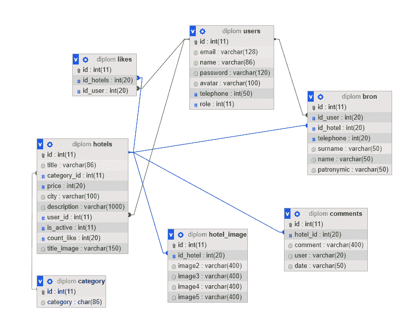

Cервис для организации онлайн-бронирования гостиниц
Автор: Дручевский Д.В., Рычка О.В.
Источник: III Международной научно-практической конференции (студенческая секция) – Донецк: ДонНТУ, 2020.
Аннотация
Дручевский Д.В., Рычка О.В. Сервис для организации онлайн-бронирования гостиниц. Описана технология бронирования номеров, регистрация, авторизация. Показана подробная структура базы данных системы. Подробно расписаны средства разработки проекта.
Общая постановка проблемы
В наше время большинство, отправляясь в путешествие, предпочитают бронировать жилье через интернет. В гостиничном бизнесе слово «сервис» означает систему мероприятий, обеспечивающих высокий уровень комфорта и удовлетворяющих самые разнообразные бытовые, экономические и культурные потребности гостей. И с каждым годом эти запросы и требования к услугам повышаются. Чем выше культура и качество обслуживания гостей, чем выше имидж отеля, тем он привлекательнее для гостей и, что сегодня не менее важно, тем успешнее материальное благополучие отеля.
Роль службы размещения и приема в гостинице является ключевой и определяющей, поскольку эта служба является лицом гостиницы, и от нее зависит популярность и скорость заполнения, а, следовательно, и экономическая эффективность гостиницы. Эффективность работы службы крайне сильно зависит и от технологии бронирования. Отдел бронирования напрямую влияет на загрузку гостиницы, что определяет ее рентабельность. Именно это и характеризует актуальность данной темы.
Введение
Планируя собственное путешествие, хочется предусмотреть все мелочи, чтобы поездка была наполнена комфортом и интересной. Важное значение имеет бронирование гостиничных номеров, как гарантия успешного проживания в отеле. Заранее забронированный номер становится не чем иным, как наиболее убедительным доказательством возможности быть полностью уверенным в том, что по приезду посетителя не будут поджидать никакие непредвиденных трудности и неприятности.
Обязательным условием для онлайн-бронирования является наличие сайта (домашней страницы) отеля. Сайт позволяет любому желающему узнать больше об отеле. Создавая сайт, необходимо позаботиться о его оригинальном дизайне, соответствующем имиджу отеля. Сайт должен содержать четкую информацию о категории и преимуществах отеля. Фотографии здания, номеров, территории вокруг гостиницы соответствующие. Также важно участие в баннерных сетях. Баннеры и ссылки следует размещать на тематических сайтах (туристических сайтах, гостиничных ассоциациях, предлагающих услуги населению и т.д.).
Развитие научно-технического процесса дает технические возможности для динамичного развития деятельности гостиниц. Автоматизация позволяет работать более эффективно, повышать надежность и достоверность предоставляемой клиенту информации, обрабатывать большее количество заявок. Схема работы с сайтом со стороны пользователя и владельца номеров представлена на рис.1 и рис.2 соответственно.
Рис. 1. Возможности обычного пользователя
Рис. 2. Возможности владельца номера
Средства разработки
Для реализации данной WEB-системы будет использован язык программирования PHP 7.1 - это скриптовый язык программирования, активно применяемый для разработки веб-приложений. В настоящее время поддерживается подавляющим большинством хостинг-провайдеров и является одним из самых популярных языков, применяющихся для создания динамических веб-сайтов.
Для реализации интерфейса системы будет использоваться HTML и CSS. Для функционирования базы данных WEB-системы будет использоваться свободная реляционная система управления базами данных СУБД MySQL версии 5.7. Разработанная физическая модель данных (рис. 3) содержит подробную информацию о каждом атрибуте, а также описание всех таблиц. В качестве Web-сервера был выбран OpenServer, который содержит Apache. Apache позволяет подключать различные модули, добавляющие в него новые возможности, а также он обладает надежностью, гибкими настройками и безопасностью.

Рис. 3. Физическая модель базы данных
HTML - стандартизированный язык гипертекстовой разметки документов во Всемирной паутине. Большинство веб-страниц содержат описание разметки на языке HTML (или XHTML). CSS - язык таблиц стилей, который используется с разметки.
Исследования
Система представляет собой веб-сайт, следовательно она будет функционировать в многопользовательском режиме
Пользователи будут разделены на 4 вида:
- обычный пользователь
- владелец номера
- администратор
- гость
Разрабатываемая WEB-система будет состоять из следующих модулей:
- Номер. В данном модуле пользователь может подробно узнать про выбранный им номер и позже перейти к бронированию или оставить комментарий.
- Бронирование. В выбранном модуле пользователь может забронировать номер на определенное время.
- Поиск. На сайте присутствует система поиска. С ее помощью пользователи могут найти желаемый им номер по атрибуту или отсортировать номера.
- Регистрация и авторизация. Чтобы полноценно работать на сайте пользователь должен зарегистрироваться, а потом авторизоваться. При регистрации для пользователя предлагается 2 варианта. 1 - это обычный пользователь, а 2 – владелец номера.
- Добавление номера. Владелец номера может самостоятельно создать свое заявление на бронирование заполнив нужные поля. Форма добавления изображена на рис.5. Главная страница разрабатываемой системы онлайн-бронирования изображена на рис.4.
Рис. 4. Главная страница сайта
Рис. 5. Форма добавления номера
Выводы
В этой статье были описаны функции разрабатываемой системы, был произведён анализ программных средств. Описан основной подход к реализации бронирования гостиниц через интернет. Также была рассмотрена архитектурная концепция и структура разрабатываемого продукта. Показана подробная структура базы данных.
Литература
- СУБД [Electronic resourse] / Интернет-ресурс. - Режим доступа: https://tproger.ru/translations/sqlite-mysql-postgresql-comparison/.
- MySQL / [Electronic resourse] / Интернет-ресурс. – Режим доступа: www/ URL: https://ru.wikipedia.org/wiki/MySQL
- Документация PHP [Electronic resourse] / Интернет-ресурс. - Режим доступа: https://www.php.net/manual/ru/mysqli.overview.php.
- Фреймворки [Electronic resourse] / Интернет-ресурс. - Режим доступа: https://habr.com/ru/company/nix/blog/329718/.
- HTML / [Electronic resourse] / Интернет-ресурс. – Режим доступа: www/ URL: https://ru.wikipedia.org/wiki/HTML- Загл. с экрана.
- CSS / [Electronic resourse] / Интернет-ресурс. – Режим доступа: www/ URL: https://ru.wikipedia.org/wiki/CSS- Загл. с экрана.
- Метод ближайших соседей [электронный ресурс], - Режим доступа: http://www.machinelearning.ru/wiki/index.php?title=Метод_ближайшего_соседа – Заглавие с экрана.